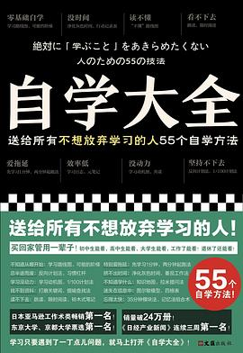

《自学大全》

总体观点
《自学大全》彻底颠覆了“学习依赖学校教育与自律天赋”的陈旧观念。作者“读书猴”自幼患有注意力障碍与阅读障碍，凭借自学掌握了庞大的文理跨学科知识；他将自学定义为“人为了不向现状屈服、为了夺回自我支配权而发起的神圣行动”。
全书以近八百页的百科全书体例，将自学拆解为动机管理、资料检索、深度阅读与抗挫复盘四大系统，提供了五十五个兼具认知科学依据与极端实操性的硬核工具。它不贩卖虚妄的励志鸡汤，而是像一套精密的开源软件手册，让每一个缺乏背景、身处迷茫中的普通人，都能靠一套方法论成为自己人生的导师。
核心观点
-
1. 自学不是天赋，而是一套可习得的技术系统
自学之所以半途而废，不是因为意志力薄弱，而是缺乏科学的行为支持系统；通过设计微习惯、降低启动阻力，任何人都能维持持久学习动力。
利用“两分钟规则”：不要一开始定下每天读两小时的宏大目标，而是要求自己“只要打开书看两分钟就可以放下”，彻底瓦解拖延阻力。 -
2. 可能的世界地图：绘制你的知识求索罗盘
在盲目啃教材之前，先画一张“可能的世界地图”，梳理自己当前困惑、核心问题以及想要抵达的认知彼岸，给大脑建立明确的检索锚点。
用思维导图列出自己为了理解“宏观经济学”需要补齐的微观经济学、数学与金融学前置知识链条，按图索骥。 -
3. 选书的艺术：以教科书和经典导论为骨架
初学者最大的误区是直接挑战晦涩的原典名著；正确的自学路径是从权威大学通识教材、学科词典与综述论文入手，先建立全局知识地图。
自学心理学时，不急于死磕拉康原文，而是先精读理查德·格里格的《心理学与生活》，掌握全部专业词汇与实验范式后再深入细分流派。 -
4. 转读、速读与精读的四级齿轮变速法
书籍不需要从第一页字字精读；先通过目录与结语快速“转读”摸清脉络，再挑核心论证章节进行“精读”并制作概念卡片，效率提升十倍。
采用卡片盒笔记法（Zettelkasten）：每读懂一个新概念，用自己的话在小卡片上写下定义、反对意见与现实生活案例，互联归档。 -
5. 挫败是自学系统的天然反馈，而非终局判决
在自学过程中看不懂、读不下去是正常的认知负荷过载现象；学会暂时搁置、寻找梯子式补充读物，是终身自学者必须掌握的心理韧性。
建立“看不懂笔记本”：将读不懂的段落原文抄下并标注疑问，隔两周回看往往因为补充了背景知识而迎刃而解。
全书结构
-
第1部分：为何要学习？（确立动机与设计环境）
分析学习动机的衰退机理；提供“学习动机地图”、“1/100计划法”、“习惯化记录表”等工具，构建抵御诱惑的物理与心理学习空间。
演练如何通过“行为链条分析法”，找出自己在翻开书本前玩手机的具体诱因，并在书桌前设置物理阻隔屏障。 -
第2部分：如何开始学习？（寻找资源与搭建书单）
文献检索实用指南：图书馆分类法利用、Google学术与数据库高效检索、如何利用专业学科指南构建一份无偏见的权威必读书单。
展示如何利用大学教学大纲（Syllabus）反向白嫖世界顶尖名校的推荐书单与课程作业思考题。 -
第3部分：如何阅读？（从转读到概念内化）
系统讲解转读法、查读法、刻意跳读、精读法、问答对读法等八大阅读技术；如何给难读经典做逻辑骨架切片笔记。
现场演示如何将一本三百页的枯燥哲学专著，通过提取每段中心句与转折连接词，在两小时内梳理出一张核心论辩树状图。 -
第4部分：如何记忆与思考？（知识图谱构建）
记忆心理学在自学中的应用：间隔重复算法（SRS）、记忆宫殿法、概念卡片箱系统，以及如何通过写作输出完成知识内化。
指导读者搭建数字双链笔记库，让不同学科读物之间关于“权力”、“理性”的笔记发生奇妙的网状自动碰撞。 -
第5部分：如何面对挫败？（自学者的心智修行）
自学遭遇停滞期的救赎指南：求助专家社群、反向复盘法、认知重塑技术，终身自学者在不确定时代抵御虚无的信仰宣言。
读书猴寄语：“世上最自由的事情，莫过于靠自己的双手和大脑，从零开始理解原本一无所知的广阔世界。”